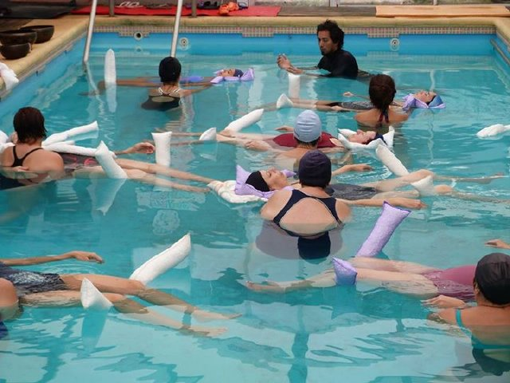

Aquarelax
El AquaRelax es un método de Terapia Acuática que fue desarrollada por Oliver W. Möhwald.IAKA ALEMANIA
AquaRelax trabaja con cojines especiales para el agua y con flotadores largos, que utiliza elementos del Trabajo Corporal Acuático, ejercicios de respiración y masajes con una profunda conexión.
AquaRelax respeta los límites y las capacidades individuales de cada cuerpo y es adecuada para niños, jóvenes y adultos mayores.
AquaRelax estimula el bienestar corporal, social y psíquico; logrando un espacio de encuentro y sana convivencia.
AquaRelax es uno de los más efectivos métodos de relajación profunda.
BENEFICIOS:
Bienestar Corporal:
• Relajación de la columna vertebral, articulaciones y músculos.
• Mejora la movilidad y coordinación
• Aumenta la circulación sanguínea
• Disminuye la Frecuencia Respiratoria (FR) y aumenta el Tiempo Inspiratorio (Ti).
• Disminuye el dolor
Bienestar Psíquico:
• Relajación profunda y disminución del stress.
• Aumenta la percepción del cuerpo y de los sentidos.
• Equilibrio interno.
• Refuerza la confianza en sí mismo.
• Despierta la vitalidad, el placer y la alegría de vivir
DINAMICA:
El objetivo de cada tratamiento debe ser el ofrecer al receptor la atención, la cercanía y la distancia de tal modo que se sienta libre, seguro, acogido y bien tratado.
El trabajo con los flotadores es fácilmente realizable y permite un suave acercamiento ofreciéndole el tiempo que necesita para acceder al contacto, de esta forma estimulamos la confianza y una relajación profunda.
Además de ello, el trabajo con flotadores permite una gran cantidad de aplicaciones manuales, porque como dadores tenemos disponibles las dos manos libres –al contrario de las otras formas de terapias acuáticas.- Estos factores predestinan la exitosa y efectiva participación de AquaRelax, tanto como en el ámbito de bienestar (Wellness) como en el contexto médico – terapéutico.
